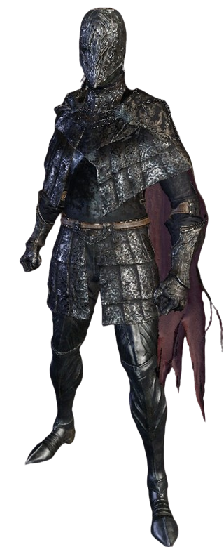
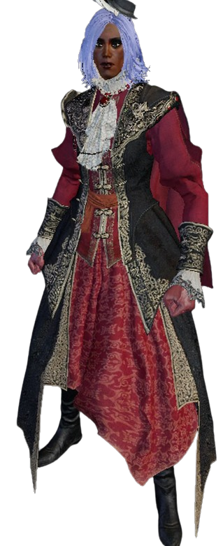

bloodborne
status: not finished
release date: mar 24, 2015
developer: from software
genre/type: action adventure, rpg, horror
outlinks: bloodborne-wiki, strategy guide, artbook
logs
24.jun.25 the moment arrived. honestly eileen's fight was MUCH harder than i had anticipated. took me a good couple of tries til i could kill her. like i even had to stop fighting her in order to farm vials and bullets which was starting to annoy me a little bit so i said fuck it and asked my girlfriend how to get to the infamous cummmfpk chalice dungeon in order to farm echoes for vials and bullets. and my god. does this change everything. but i'm pretty much sticking to using the farmed echoes for shop purchases. because i feel like otherwise it would take away from the challenge of the game if i use it to level up my character. anyway, rest in peace, eileen. you will be missed. she must be one of the hardest hunters you fight in game because WOW.
20.jun.25 been a while since i've updated this but i'm still making progress! ok so FIRST of all my latest achievement in this game has been being able to beat martyr logarious because WOW did that get some time to get used to his moves. but once you got that down, the fight gets very very manageable. i think it took me like. 10 times or something like that to beat him. the trick was to do as many viceral attacks as i could since that's what was doing most of the damage to him. also, i did not mean to aurafarm when i activated the fire paper my bad. below i share a clip of the last moments of the boss fight.
my online friend, hina, came to my world to help me out with rom which made the fight insanely easy. i was already told the fight wasn't going to be hard but that the baby spiders are kinda annoying. i never got to experience that because i basically explored the entirety of byrgenwerth with my friend. very small place.
after rom, i stumbled upon yahar'gul once again. i am scared! of what's happening in game but i will persevere. i checked some of my lamps and noticed two of them weren't working: hypogean gaol and grand cathedral. hypogean gaol is probably disabled because i just got to yahar'gul and some shit is most likely going down over there. but grand cathedral..... ermmm.... i don't think i've mentioned this here but i am currently playing in a save file that dates back to 2018 when this game was free through PS+. idk what was wrong with me back then but i aggro'ed eileen the crow and well. i've heard that because of that she will eventually want to kill me. this is that moment. i am pretty sure the lamp has been disabled because of that.  i'm so sad i did that because she seems like such a cool character... but oh well. we move forward. it is safe to say i have a fight with her pending *gulp*.
i'm so sad i did that because she seems like such a cool character... but oh well. we move forward. it is safe to say i have a fight with her pending *gulp*.
there's also some items and places i would like to explore a bit more in-depth before going deep into yahar'gul... so i will probably do that before advancing further into this insane story. oh i also figured out how to take nice screenshots in-game without my character appearing in them. nice. you just gotta use the monocle + sitting emote + hide the ui. i actually got that little trick from this youtube video i've been watching as i play the game. i have no clue what is happening in this game 99% of the time.
.jpg)
.jpg)
.jpg)
30.may.25 I BEAT THE 3 BROS. i am finally back where i was when my PS4 stopped working! i might explore the forbidden woods before diving deeper into new territory though cus i'm missing some items from that area. i feel like i'm starting to get a bit more of confidence with this game... slowly but surely.
25.may.25 leveled up 3 times and also went to the clinic and to the castle. i love playing this game and its story and the setting but i also forget how scary playing it is for me  which makes me get really tense at times and even find the game a bit exhausting to play as well.... wish i was built different but i am not
which makes me get really tense at times and even find the game a bit exhausting to play as well.... wish i was built different but i am not  so i downloaded the official strategy guide into my tablet and that has helped out a bit with my overall anxiousness while playing. i honestly just need to unclench and stop being so scared of dying in a game where dying is literally one of the core mechanics.
so i downloaded the official strategy guide into my tablet and that has helped out a bit with my overall anxiousness while playing. i honestly just need to unclench and stop being so scared of dying in a game where dying is literally one of the core mechanics.
22.may.25 WE ARE SO BACK???? i bought a PS5 recently and i am SO ready to dive into this world again. lucky for me, since i had PS+ at that time most of my saved data was able to be uploaded to the cloud storage. the only bad news is that it seems that a portion of what i last played did not seem to upload to the cloud. i noticed this when i noticed i was missing the castle cainhurst lantern and the lantern you get when you kill the 3 bros THAT I HAD FOUGHT WITH SWEAT AND TEARS... so i got some exploring to do at the current moment before i get to where i was!
05.jan.25 the wired controller did not work. but you know what, eventually i will sent out my PS4 to get the wifi chip replaced. i wont give up!!!! i am hopeful for my 9 year old PS4! i am poor! and i want to keep playing bloodborne JLDFKJSDFJ
11.dec.23 i don't know why i just thought about this but i think if i a bought a WIRED ps4 controller, i Would Be Able to play bloodborne again..... don't really feel like dropping 20 bucks just for that though. i really like the little messages people place in these games and if i play again i won't have that </3 so yeah i don't have much desire to buy that controller despite me missing the game! i thought about getting my ps4 fixed that first week it went nuts, but at that point i might as well just wait 5 years or something until i can afford a ps5. ahhhh 
14.sep.23no more bloodborne til further notice
04.sep.23soooooooooo you might be wondering what has happened to bloodborne after me playing nonstop for the entirety of july  welp... i wrote about my woes with my ps4 in a journal log if you'd like to read more about it. but basically, the ps4 controller does not want to connect to it due to a faulty bluetooth / wifi antenna. sigh
welp... i wrote about my woes with my ps4 in a journal log if you'd like to read more about it. but basically, the ps4 controller does not want to connect to it due to a faulty bluetooth / wifi antenna. sigh  honestly, i barely play on it nowadays so like if this were the end of my ps4 i'd be like damn... but okay. BUT I STILL NEED TO FINISH BLOODBORNE!!!!!!!!!!!!!! i bought a replacement for the antenna so i'll update this page to let yall know how that went and if my bloodborne journey (ps4 exclusive btw) ends here
honestly, i barely play on it nowadays so like if this were the end of my ps4 i'd be like damn... but okay. BUT I STILL NEED TO FINISH BLOODBORNE!!!!!!!!!!!!!! i bought a replacement for the antenna so i'll update this page to let yall know how that went and if my bloodborne journey (ps4 exclusive btw) ends here  i miss playing it a bit too! so i hope i can get that fixed
i miss playing it a bit too! so i hope i can get that fixed
but to catch up where i last left in the game before my ps4 decided to hate me: i explored a bit more of the cainhurst (? idk if that's how it spelled) castle and found a boss with a VERY cool scythe but oh my god... this one is going to be ROUGH. he's not that fast but he is pretty quick in executing his moveset. and i am very used to my hunter axe but i can tell it's gonna be a bit troublesome to defeat him with the slow weapon that i have.... i gave this boss a try 3 times. i think all those times i got him to half health. which isn't bad. but also the fact that we are fighting on a roof makes things even more stressful because in one of my runs i died CUS I FELL from said roof :[
it is safe to say that IF i can get my ps4 fixed again, i will need a GOOD warmup before i try to fight that boss again. UGH but i do miss bloodborne a normal amount </3 so sad
20.jul.23today i got to cainhurst castle! (happy but also shivering from fear) you know ive noticed that im always VERY tense when playing this game. its crazy bc i do enjoy it but oh my god. i really cant deny that despite getting the hang of this game it is still Really scary for me  its like i love it because the atmosphere is so well made but i also hate how it makes me feel so much gripping my ps4 controller for life
its like i love it because the atmosphere is so well made but i also hate how it makes me feel so much gripping my ps4 controller for life
i liked the view here tho. nice place to take a quick breather. only for me to get scared in the next 10 seconds PLEASEEE
as you can see i really but really take my time getting through these levels (tho theres some rare cases where i just have to say fuck it and run pass them). while exploring this place theres these ladies with swords (honestly good for them i guess) and they are VERY slow but all of a sudden this happened and i went NOPE, me and my 20k echoes are outtie. yall take it easy. i had just unlocked a shortcut too so it seemed quite fitting to stop the journey there
right after this i spent exactly 8 minutes fighting like 10 5ft long worms. horrible i know. i hope i never encounter them again in another level because wow were they such a pain for just being skinny ass WORMS
16.jul.23wrote a blog post about my experience with bloodborne and anxiety. this game has helped me out with coming to come to terms with some things about myself and gave me a new perspective on my own struggles  if you'd like to read it you can do so here!
if you'd like to read it you can do so here!
in other news, i've been progressing a lot through the game! im about to go to the forbidden woods (i think its the game...) and also i think i might be a bit overleveled so i should be good to go 
23.jul.23SO. i beat another boss!! my heart wanted to get out of my chest on this one good lord. i tried my best not to panic and it REALLY paid off. this fight was sooo long for me holy moly. but i did it! i REALLY thought i was going to die and after all, this was just my first try at the boss so you know. but just WOW...
sorry for the bad mic quality i didnt have it out but i forgot to mute it DFJLFD. you can hear my stress and desperation to just finish this damn fight
i unlocked the next area as well, but i think i will keep exploring the forbidden woods, and maybe even that castle i went to a couple of days ago before proceeding to the next area
08.jul.23been playing bloodborne recently and YEAH its pretty scary (for someone like me) but it is so fun!!!!! i had given this game a try back when it was free for ps+ in 2018 and i did like it but every time i died i felt horrible so i stopped playing it LKFJDLj but since i got ps+ again i decided to give it a try once more. and i think this time it hit me. my girlfriend has also been helping me out giving me tips and tricks throught my journey YAY!
i have much more to write about this game but soon i will be publishing an in-depth blog post about bloodborne and my experience with it so please stay tuned for that!
favorites
weapons
- hunter axe - been there since day 1. i just really love the range on this thing.
- kirkhammer - with a strength build i decided to give the kirkhammer a try and i ended up really liking it. i mostly use the sword though... haven't used it a lot transformed. i feel like at that point i might as well use my axe. but i like the sword when fighting fast enemies.
outfits
 
screenshots
videos
[16.jul.23] - this has been the funniest death i've had since playing this game